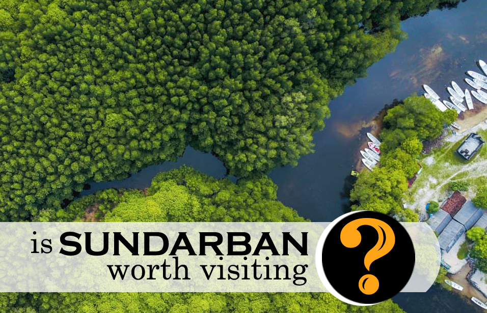
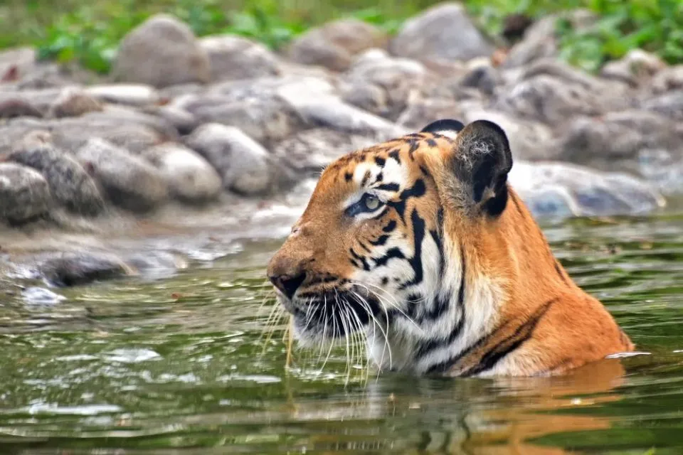
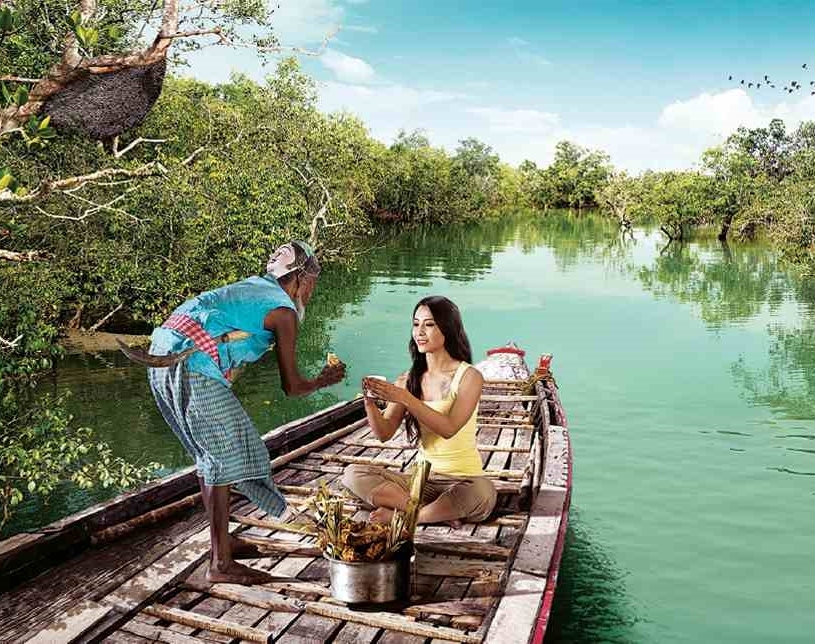
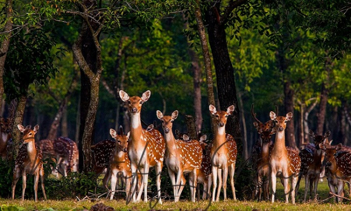
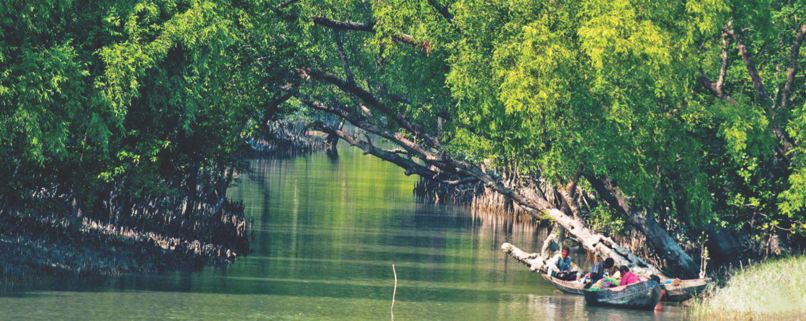
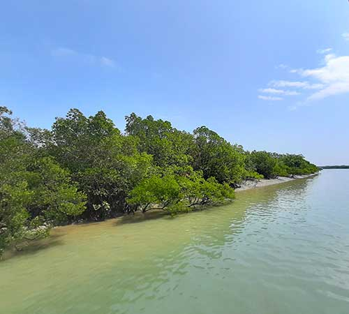
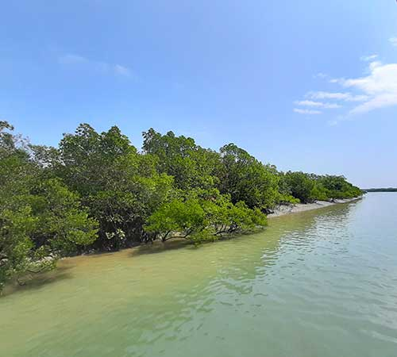

NATURAL IMAGES





 

The Largest Mangrove Forest In The World
The Sundarbans is the largest contiguous block of mangrove forest in the world. It is a playground of heavenly beauty bestowed by nature. In Bangladesh tourism, Sundarbans play the most vital role. A large number of foreigners come to Bangladesh every year only to visit this unique mangrove forest. Beside, local tourist also goes to visit Sundarbans every year. It is located on the south-west part along the Bay of Bengal of Bangladesh. The Sundarbans is the single mangrove forest in the world. The area of Sundarbans is approximately 6017 sq. km. The exciting events in the Sundarbans tour are hiking in the deep forest, country boat cruising, bird watching, night safari and campfires and also staying on vessel at wild jungle atmosphere which will definitely add to your adventure experience.
contact us:
- Cell: +88 01915440942 , +88 01714848316
- Email: Sundarbanwonders@yahoo.com
- sundarbanwonderstourism@gmail.com
The Largest Mangrove Forest In The World
The Sundarbans is the largest contiguous block of mangrove forest in the world. It is a playground of heavenly beauty bestowed by nature. In Bangladesh tourism, Sundarbans play the most vital role. A large number of foreigners come to Bangladesh every year only to visit this unique mangrove forest. Beside, local tourist also goes to visit Sundarbans every year. It is located on the south-west part along the Bay of Bengal of Bangladesh. The Sundarbans is the single mangrove forest in the world. The area of Sundarbans is approximately 6017 sq. km. The exciting events in the Sundarbans tour are hiking in the deep forest, country boat cruising, bird watching, night safari and campfires and also staying on vessel at wild jungle atmosphere which will definitely add to your adventure experience.